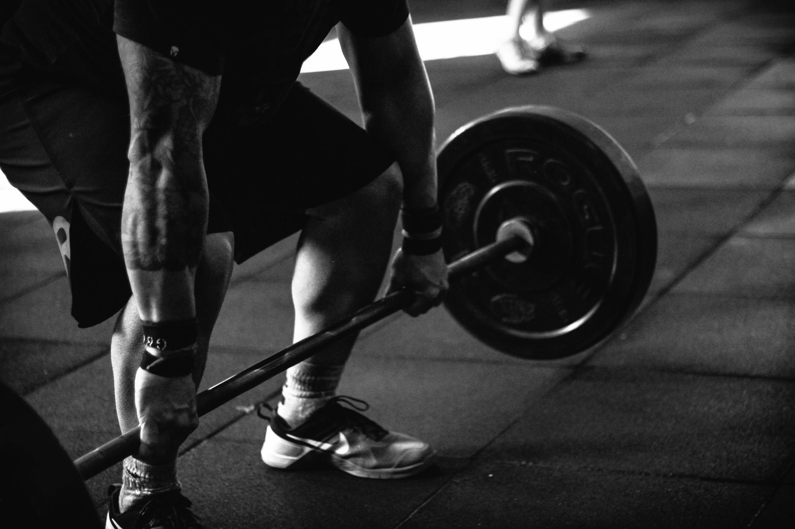
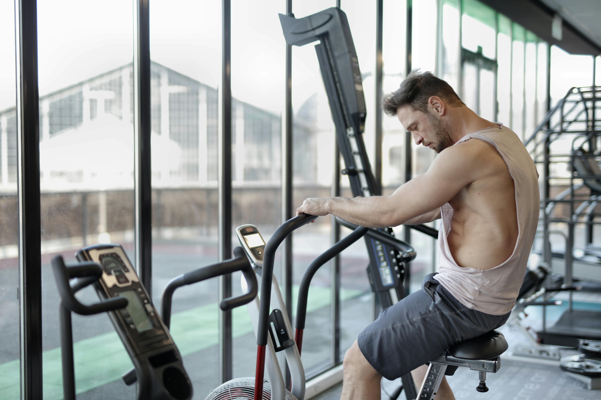

Principais Pontos para Gerar Hipertrofia
1
Dieta
Uma alimentação balanceada deve incluir uma variedade de alimentos que forneçam todos os nutrientes essenciais, como proteínas, carboidratos, gorduras saudáveis, vitaminas e minerais. Incorporar frutas, vegetais, grãos integrais e proteínas magras pode ajudar a melhorar a energia, fortalecer o sistema imunológico e otimizar a recuperação muscular. Evitar alimentos processados e ricos em açúcares adicionados é crucial para prevenir doenças e promover um bem-estar geral.

2
Treino
O treino físico é essencial para melhorar a força, a resistência e a saúde geral. Um programa de exercícios bem estruturado deve incluir uma combinação de treino cardiovascular, treinamento de força e flexibilidade. O treino cardiovascular, como corrida ou ciclismo, ajuda a melhorar a saúde do coração e aumentar a resistência. O treinamento de força, através de levantamento de pesos ou exercícios de resistência, é crucial para construir músculos e fortalecer os ossos.
3
Hidratar
A hidratação adequada é vital para o funcionamento ótimo do corpo e para o desempenho durante atividades físicas. Manter-se hidratado ajuda a regular a temperatura corporal, lubrificar as articulações e facilitar o transporte de nutrientes. A água é a melhor opção para a maioria das necessidades diárias, e é especialmente importante durante e após o exercício para repor os fluidos perdidos.

4
Cardio
Atividades como correr, nadar, pedalar e até mesmo caminhar rapidamente são formas eficazes de melhorar a capacidade aeróbica e aumentar o metabolismo. O cardio pode ajudar a reduzir o risco de doenças cardíacas, melhorar a circulação e aumentar a energia. Recomenda-se que os adultos realizem pelo menos 150 minutos de atividade cardiovascular de intensidade moderada por semana ou 75 minutos de intensidade vigorosa, conforme indicado por diretrizes de saúde.
